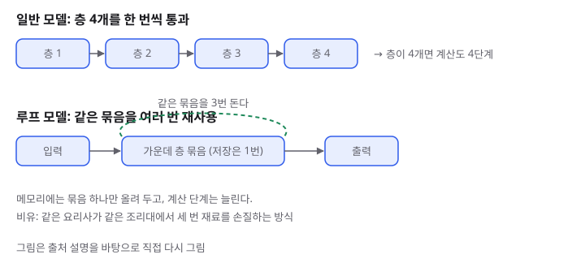
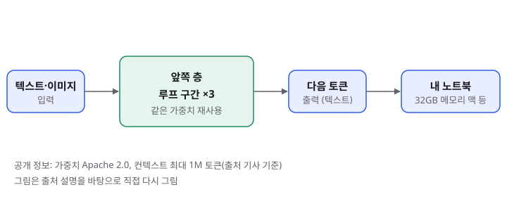

Inkling 2 Mini: 같은 층을 세 번 도는 260억 매개변수 오픈 모델
- Thinking Machines Lab이 공개한 오픈 웨이트 모델 Inkling 2 Mini가 노트북에서 돌아간다는 점이 개발자 커뮤니티에서 화제가 됐다.
- 일반 모델은 층을 한 번씩만 통과하지만, 이 모델은 가운데 층 묶음을 세 번 반복해 계산한다. 저장 공간은 적게 쓰고 생각 단계는 늘린다.
- 입문 개발자에게는 "비싼 서버 없이 내 PC에서 AI를 직접 돌려 볼 수 있는 선택지가 또 하나 생겼다"는 뜻이다.
요즘 AI 모델은 대부분 크기가 커질수록 좋아진다고 알려져 있습니다. 그런데 Inkling 2 Mini는 반대 방향을 택했습니다. 모델의 "층"을 많이 쌓는 대신, 중간의 같은 층 묶음을 여러 번 돌려 쓰는 방식입니다. 그 결과 약 26B(260억) 매개변수급 모델을 32GB 메모리의 맥북에서 실행할 수 있다는 소식이 퍼졌습니다.
01한눈에 보기
계단 오르기를 떠올려 보세요. 일반 모델은 계단 네 칸을 한 번씩 올라갑니다. 루프 모델은 가운데 계단 세 칸을 세 번 오르내리고, 계단 자체(가중치)는 한 벌만 가지고 있습니다. 계단을 많이 짓는 대신 같은 계단을 여러 번 쓰니 집 안 공간(메모리)은 덜 차지하고, 생각하는 단계는 늘어나는 셈입니다.

· 오픈 웨이트: 학습된 가중치 파일을 누구나 내려받아 쓸 수 있게 공개한 것. 소스 코드까지 공개한다는 뜻은 아닙니다.
· 루프 트랜스포머: 같은 층 묶음을 여러 번 반복 통과시키는 구조.
02어떻게 동작하나요
처리 순서는 세 단계로 보면 쉽습니다. 먼저 텍스트나 이미지를 입력받고, 그다음 앞쪽 층을 거친 뒤 가운데 묶음을 여러 번 돌립니다. 마지막으로 다음 토큰(글자 조각)을 출력합니다. 출처 기사들은 가운데 묶음을 세 번 돈다는 점을 공통으로 적었습니다. 저장된 층은 24개인데, 한 토큰을 처리할 때 적용되는 층 수는 그보다 많아진다는 설명도 있습니다.

여기서 입문자가 기억할 포인트는 하나입니다. "저장 공간은 적게, 계산 횟수는 많게"입니다. 같은 요리사가 같은 조리대에서 재료를 세 번 손질하는 것과 비슷합니다. 조리대는 하나지만 손질 단계는 세 번이라 주방이 좁아도 요리는 가능하지만, 요리 시간은 길어집니다.
03왜 지금 화제인가요
Thinking Machines Lab은 이 모델을 11월 20일 무렵 공개한 것으로 여러 기사가 전했습니다. 입문 개발자가 주목할 부분은 "모델이 작은데 성능이 어디까지 나오나"보다 "내 노트북에서 직접 돌려 볼 수 있나"입니다. 기사들은 32GB 메모리 맥에서 실행 가능하다는 점을 반복해서 강조했습니다. 다만 아래 반응은 모두 2차 기사와 블로그에서 가져온 요약입니다.
이 글의 근거는 공개 직후인 11월 20~21일에 나온 글입니다. 오늘 수집 구간(11월 27일 16:30 ~ 11월 28일 16:00)에 새로 나온 발표는 찾지 못했고, 지난 일주일 안에 새 업데이트가 있었는지도 확인하지 못했습니다. 그래도 아직 입문자 대상 설명이 많지 않아 오늘 정리합니다.
04관련 나라·기업
| 구분 | 이름 | 어떤 관련이 있나 |
|---|---|---|
| 기업 | Thinking Machines Lab | Inkling 2 Mini를 공개한 개발사. 미국 기업으로 알려져 있다. |
| 기업 | Hugging Face | 모델 가중치와 모델 카드를 내려받을 수 있는 공개 플랫폼. 기사들이 이 경로를 함께 안내했다. |
| 나라 | 미국 | 개발사의 본사 소재지. |
05기존 방식과 무엇이 다른가
| 비교 항목 | 기존 방식(일반 모델) | Inkling 2 Mini(루프 구조) |
|---|---|---|
| 계산 경로 | 층을 위에서 아래로 한 번씩 | 가운데 묶음을 여러 번 반복 |
| 메모리 부담 | 층이 늘수록 가중치도 늘어남 | 반복 구간의 가중치는 한 벌만 저장 |
| 성능 올리는 방법 | 보통 모델을 더 크게 만듦 | 같은 크기에서 반복 횟수를 조절 |
| 입문자 체감 | 고사양 GPU나 클라우드가 필요한 경우가 많음 | 32GB 메모리 맥 같은 개인 장비에서 실행 가능하다고 보도 |
06직접 해 보기
이 글에는 명령어나 코드를 넣지 않았습니다. 공식 설치 명령을 직접 확인하지 못했기 때문입니다. 대신 아래 순서로 살펴보면 됩니다.
1. 모델 카드부터 열기
Hugging Face에서 Inkling 2 Mini를 검색해 모델 카드(설명 페이지)를 엽니다. 라이선스, 권장 실행 환경, 입력 형식을 먼저 확인하세요.
2. 내 장비의 메모리 확인
모델 파일은 약 20GB 수준이라고 기사들이 전했습니다. 내 PC나 맥의 통합 메모리·VRAM이 여유 있는지 먼저 봅니다.
3. 로컬 실행 도구 고르기
로컬에서 모델을 돌리는 도구 중 모델 카드가 지원한다고 밝힌 것을 고릅니다. 기사들은 여러 도구의 지원 소식을 전했지만, 공식 문서에서 다시 확인한 뒤 설치하세요.
4. 짧은 질문으로 첫 실험
긴 문서 요약이나 간단한 코드 설명 같은 짧은 질문부터 던져 보고, 답의 품질과 응답 속도를 기록해 두면 다른 모델과 비교하기 쉽습니다.
07주의할 점과 한계
- 공식 발표 페이지와 모델 카드를 이번 작업에서 열어 보지 못했습니다. 매개변수 수(26B, 기사 중 26.4B 표기도 있음), 활성 매개변수, 학습 과정 등 세부 수치는 2차 기사에 따라 다릅니다. 실제로 쓰기 전에 모델 카드에서 확인하세요.
- 벤치마크 수치는 개발사와 기사의 자체 보고입니다. 독립 기관이 같은 조건에서 재현한 결과로 보기는 어렵습니다. 기사에 나온 순위 표현은 참고만 하세요.
- "노트북에서 돌아간다"는 것은 실행 가능하다는 뜻이지 빠르다는 뜻이 아닙니다. 반복 계산 때문에 응답이 느릴 수 있고, 장비 사양에 따라 체감이 크게 다릅니다.
- 변형 모델에 주의하세요. 공개 후 같은 기반의 수정본이 올라오는 경우가 있습니다. 원본 개발사의 모델 카드를 기준으로 삼으세요.
08정리
Inkling 2 Mini가 주목받는 이유는 성능 순위보다 "계산 방식을 바꾸면 같은 장비로 더 많은 일을 할 수 있다"는 가능성 때문입니다. 같은 층을 반복해 쓰는 구조는 메모리를 아끼고, 대신 계산 시간을 늘리는 선택입니다. 입문 개발자 입장에서는 큰 모델을 클라우드에서 빌려 쓰는 것 말고도, 작은 장비에서 직접 실험할 수 있는 길이 열리고 있다는 신호로 읽으면 됩니다.
다만 오늘 글의 수치는 대부분 2차 기사와 개발사 자체 보고에 기대고 있습니다. 실제로 써 보기 전에 모델 카드와 라이선스를 직접 열어 확인하고, 내 장비에서 짧은 질문부터 돌려 보세요. 구조가 낯설다면 이번 글의 그림 두 장을 다시 보면서 "층을 쌓는 방식"과 "같은 층을 반복하는 방식"의 차이만 기억해도 충분합니다.
09참고한 글
- Inkling 2 Mini: Artificial Analysis 기사 Artificial Analysis · 2026.11.20
- 24층을 48번 연주하는 첫 looped 오픈모델, Inkling 2 Mini ThakiCloud · 2026.11.21
- Thinking Machines releases Inkling 2 Mini, an open looped transformer that runs on a laptop DEV Community · 2026.11.21